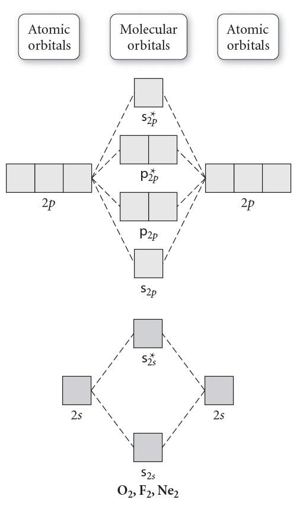

1) What is the VSEPR shape (electron domain geometry) of BH3?
A) Linear
B) Trigonal planar*
C) Tetrahedral
D) Bent
The Lewis structure for BH3 has 3 electron domains, so the VSEPR shape (electron domain geometry) of BH3 is trigonal planar.
2) What is the molecular shape of SiO2?
A) Tetrahedral
B) Linear*
C) bent
D) Trigonal planar
Since the Lewis structure of SiO2 has 2 electron domains, none of which are lone pairs, the molecular shape of SiO2 is linear.
3) Is NH3 polar or nonpolar?
A) Nonpolar
B) Polar*
Since NH3 is trigonal pyramidal (which is an asymmetrical shape), it will be polar.
4) What is the molecular shape of XeF4?
A) Square pyramidal
B) Octahedral
C) Square planar*
D) See saw (saw horse)
Since the Lewis structure of XeF4 has 6 electron domains, 2 of which are lone pairs, the molecular shape of XeF4 is square planar.
5) Identify the number of electron groups (electron domains) around a molecule with sp hybridization.
A) 4
B) 2*
C) 3
D) 5
# Electron domains
Hybridization
2
sp
3
sp2
4
sp3
5
sp3d
6
sp3d2
6) Which of the following compounds is nonpolar?
A) SF6*
B) HF
C) H2O
D) HCN
SF6 is octahedral shaped, which is a symmetrical shape. That means the fluorines electronegativities will balance out and SF6 will be nonpolar.
7) What is the molecular shape of BF3?
A) Linear
B) Tetrahedral
C) Trigonal planar*
D) bent
Since the Lewis structureof BF3 has 3 electron domains, none of which are lone pairs, the molecular shape of BF3 is trigonal planar.
8) Give the molecular shape for H2S
A) Trigonal bipyramid
B) Bent*
C) Square planar
D) Octahedral
Step 1: Draw the Lewis Structure. Step 2: Count the number of electron domains: the number of lone pairs and number of atoms bonded to S. You should get 4 electron domains, of which 2 are lone pairs. 4 electron domains and 2 are lone pairs corresponds to a bent molecular shape.
9) Use the molecular orbital diagram shown below to determine which of the following are the MOST stable. 
A) F2+
B) FO+*
C) NeF
D) F2
Step 1: Count the number of valence electrons in the molecule. FO+: 12 valence electrons F2+: 13 valence electrons F2: 14 valence electrons NeF: 15 valence electrons Step 2: Fill in the molecular orbital diagram from the bottom up, but make sure to follow Hund's rule (one electron in each orbital in degenerate orbitals before a second with an opposing spin) when filling pi molecular orbitals. Step 3: Determine the bond order. Since after 10 valence electrons, the rest go into anti-bonding orbitals, the lowest number of electrons will have the highest bond order. Bond order = (electrons in bonding orbitals - electrons in antibonding orbitals)/2 Bond order for FO+: (8-4)/2 = 2 Bond order for F2+: (8-5)/2 = 1.5 Bond order for F2: (8-6)/2 = 1 Bond order for NeF: (8-7)/2 = 0.5 Since FO+ has the highest bond order, it will be the MOST stable.
10) What is the VSEPR shape (electron domain geometry) of PH3?
A) Linear
B) Bent
C) Trigonal planar
D) Tetrahedral*
Since the Lewis structure of PH3 has 4 electron domains, the VSEPR shape (electron domain geometry) of PH3 is tetrahedral.
11) What is the molecular shape of H2O?
A) Bent*
B) Trigonal pyramidal
C) Tetrahedral
D) Trigonal planar
Since the Lewis structureof H2O has 4 electron domains, 2 of which are lone pairs, the molecular shape of H2O is bent.
12) What is the hybridization on the central atom for HSiN?
A) sp*
B) sp3
C) sp2
D) sp3d
Step 1: Draw the Lewis Structure. Step 2: Count the number of electron domains: the number of lone pairs and number of atoms bonded to Si. You should get 2 electron domains. 2 electron domains corresponds to sp hybridization.
# Electron domains
Hybridization
2
sp
3
sp2
4
sp3
5
sp3d
6
sp3d2
13) Use the molecular orbital diagram shown below to determine which of the following are the paramagnetic (there may be more than one answer).
A) NC-
B) C2
C) C2+*
D) NC*
Step 1: Count the number of valence electrons in the molecule. C2+: 7 valence electrons C2: 8 valence electrons NC: 9 valence electrons NC-: 10 valence electrons Step 2: Fill in the molecular orbital diagram from the bottom up, but make sure to follow Hund's rule (one electron in each orbital in degenerate orbitals before a second with an opposing spin) when filling pi molecular orbitals. Step 3: Determine if there are any unpaired electrons in the molecular orbital diagram. C2+: 7 valence electrons, and odd numbers will always have unpaired electrons = paramagnetic C2: 8 valence electrons, the pi 2p orbitals get filled, leaving no unpaired electrons = diamagnetic NC: 9 valence electrons, and odd numbers will always have unpaired electrons = paramagnetic NC-: 10 valence electrons, the last 2 electrons go into sigma 2p orbital filling it, which means there are no unpaired electrons = diamagnetic
14) Which of the following compounds is polar?
A) CO2
B) NH3*
C) SiF4
D) CCl4
NH3 is trigonal pyramidal shaped which is not a symmetrical shape, thus NH3 will be polar.
15) Is AsF5 polar or nonpolar?
A) Polar
B) Nonpolar*
Since AsF5 is trigonal bipyramidal (which is a symmetrical shape), the electronegativities of the five fluorines balance out and AsF5 is nonpolar.
16) What is the VSEPR shape (electron domain geometry) of CH4?
A) Bent
B) Linear
C) Tetrahedral*
D) Trigonal planar
Since the Lewis structure of CH4 has 4 electron domains, the VSEPR shape (electron domain geometry) of CH4 is tetrahedral.
17) What is the VSEPR shape (electron domain geometry) of SF6?
A) Octahedral*
B) Trigonal bipyramidal
C) Trigonal planar
D) Tetrahedral
Since the Lewis structure of SF6 has 6 electron domains, the VSEPR shape (electron domain geometry) of SF6 is octahedral.
18) What is the molecular shape of PF5?
A) Trigonal bipyramidal*
B) Octahedral
C) Bent
D) See saw (saw horse)
Since the Lewis structure of PF5 has 5 electron domains, none of which are lone pairs, the molecular shape of PF5 is trigonal bipyramidal.
19) Use the molecular orbital diagram shown below to determine which of the following are the MOST stable.
A) BC2-
B) B2-
C) C22-*
D) NC+
Step 1: Count the number of valence electrons in the molecule. B2-: 7 valence electrons NC+: 8 valence electrons BC2-: 9 valence electrons C22-: 10 valence electrons Step 2: Fill in the molecular orbital diagram from the bottom up, but make sure to follow Hund's rule (one electron in each orbital in degenerate orbitals before a second with an opposing spin) when filling pi molecular orbitals. Step 3: Determine the bond order. Since after 4 valence electrons, the rest go into bonding orbitals, the highest number of electrons will have the highest bond order. Bond order = (electrons in bonding orbitals - electrons in antibonding orbitals)/2 Bond order for B2-: (5-2)/2 = 1.5 Bond order for NC+: (6-2)/2 = 2 Bond order for BC2-: (7-2)/2 = 2.5 Bond order for C22-: (8-2)/2 = 3 Since C22- has the highest bond order, it will be the MOST stable.
20) Use the molecular orbital diagram shown below to determine which of the following are the diamagnetic (there may be more than one answer).
A) O2
B) F2-
C) OF-*
D) OF
Step 1: Count the number of valence electrons in the molecule. O2: 12 valence electrons OF: 13 valence electrons OF-: 14 valence electrons F2-: 15 valence electrons Step 2: Fill in the molecular orbital diagram from the bottom up, but make sure to follow Hund's rule (one electron in each orbital in degenerate orbitals before a second with an opposing spin) when filling pi molecular orbitals. Step 3: Determine if there are any unpaired electrons in the molecular orbital diagram. O2: 12 valence electrons, the last 2 electrons go into pi 2p orbitals, which means there are 2 unpaired electrons = paramagnetic OF: 13 valence electrons, and odd numbers will always have unpaired electrons = paramagnetic OF-: 14 valence electrons, the pi 2p orbitals get filled, leaving no unpaired electrons = diamagnetic F2-: 15 valence electrons, and odd numbers will always have unpaired electrons = paramagnetic
21) Give the electron domain geometry for KrF4
A) Square pyramidal
B) Tetrahedral
C) Linear
D) Octahedral*
Step 1: Draw the Lewis Structure. Step 2: Count the number of electron domains: the number of lone pairs and number of atoms bonded to Kr. You should get 6 electron domains. 6 electron domains corresponds to an octahedral electron domain geometry.
22) When a neutral atom gains an electron it becomes a(n) ____________, with a _____________ charge.
A) anion, negative*
B) anion, positive
C) cation, positive
D) cation, negative
When a neutral atom gains an electron, it becomes a negatively charged ion called a anion. Anion have a net negative charge. The charge on the anion depends on the number of electrons gained. For each electron gained, the cation's charge changes by -1.
23) A new compound was recently discovered and found to have an average atomic mass of 359.38 amu. This element has two isotopes, the lighter of which has an atomic mass of 349.97 amu and an abundance of 72.787%. What is the mass of the heavier isotope?
A) 384.55*
B) 346.45
C) 362.90
D) None of the above.
To find the mass of the heavier isotope, we can use the information provided. Let's denote the mass of the heavier isotope as X amu.
The average atomic weight of the compound is calculated by considering the masses and abundances of both isotopes. Using the given values, we can set up the following equation:
Now, we can solve for the mass of the heavier isotope:
X amu = 104.65 amu / abundance of heavier isotope
Given that the abundance of the heavier isotope is 27.213% (100% - 72.787%), we can set up the following equation:
X amu = 104.65 amu / 27.213%
Converting the abundance to a decimal:
X amu = 104.65 amu / 0.27213
X amu ≈ 384.55 amu
24) Which of the following statements about subatomic particles are true.
A) negatively charged ions have more protons than electrons
B) charge = protons - electrons*
C) charge = protons - neutrons
D) positively charted ions (cations) have more electrons than protons
25) What is the name of the Cr isotope that has 31 neutrons?
A) Chromium-24
B) Chromium-31
C) Chromium-52
D) Chromium-55*
To determine an isotope given its chemical symbol and the number of neutrons, follow these steps:
Identify the chemical symbol: The chemical symbol represents the element. It is typically a one- or two-letter abbreviation, such as H for hydrogen, C for carbon, or Au for gold.
Determine the atomic number: The atomic number of an element corresponds to the number of protons in the nucleus of its atoms. It is usually listed as a subscript to the left of the chemical symbol. You can find the atomic number on the periodic table.
Calculate the mass number: The number of neutrons is given. Add this number to the atomic number to determine the mass number. The mass number represents the total number of protons and neutrons in the nucleus.
Write the isotope: Once you know the atomic number and the number of neutrons, you can write the isotope by combining the chemical symbol, atomic number, and mass number. The atomic number is written as a subscript, and the mass number is written as a superscript.
In this problem:
The chemical symbol is Cr.
The atomic number of chromium is 24.
Add the number of neutrons (31 neutrons) to the atomic number (24) to determine the mass number: 31 + 24 = 55.
Write the isotope: Chromium-55
26) Which ion is represented by the following information? p+ = 12, e- = 14
A) Mg2-*
B) Na2-
C) Al2+
D) Mg2+
This ion has 12 protons, and 14 electrons. Since it has 12 protons, we can determine the element is Mg by looking at the periodic table. Charge = # protons - # electrons Charge = 12 - 14 = 2- Thus the ion can be represented with Mg2-
27) Which of the following statements about isotopes is true?
A) isotopes have the same chemical properties*
B) isotopes have different chemical properties
C) isotopes have the same number of neutrons but different numbers of protons
D) isotopes have the same mass
28) In the following isotope symbol, the letters for the element have been replaced with an X. What is the name of the isotope? \( ^{18}_{9}X \)
A) Argon-18
B) Fluorine-9
C) Fluorine-9
D) Fluorine-18*
The correct answer is Fluorine-18.
In the isotope symbol \( ^{18}_{9}X \), the superscript 18 represents the mass number, which is the sum of protons and neutrons in the nucleus. The subscript 9 represents the atomic number, which corresponds to the number of protons in the nucleus.
Since the atomic number is 9, we can identify the element as fluorine because fluorine has 9 protons according to the periodic table. Therefore, the isotope is Fluorine-18, with a mass number of 18 and an atomic number of 9.
29) What mass (in mg) does 8.10 moles of carbon have?
A) 9.73x104 mg*
B) 4.77x105 mg
C) 97.3 mg
D) 674 mg
30) An element has an average atomic mass of 105.13 amu. The X-109 isotope (108.99 amu) has an abundance of 38.38%. What is the mass, in amu, of the other isotope?
A) 105 amu
B) 102 amu
C) 101.28 amu
D) 102.73 amu*
To find the mass of the other isotope, we need to subtract the contribution of the X-109 isotope from the average atomic mass.
Mass of the X-109 isotope = 108.99 amu Abundance of the X-109 isotope = 38.38%
Let's denote the mass of the other isotope as "X".
Average atomic mass = (Mass of X-109 isotope * Abundance of X-109 isotope) + (Mass of X * Abundance of other isotope)
Protons: Protons carry a positive charge of +1 and are located in the nucleus of an atom. The approximate mass of a proton is 1.67 x 10^-27 kilograms or 1 atomic mass unit (amu).
Neutrons: Neutrons are electrically neutral, meaning they have no charge. Like protons, they are located in the nucleus of an atom. The approximate mass of a neutron is also 1.67 x 10^-27 kilograms or 1 atomic mass unit (amu), which is very similar to the mass of a proton.
Electrons: Electrons carry a negative charge of -1 and orbit around the nucleus of an atom in electron shells. The mass of an electron is much smaller compared to protons and neutrons. It is approximately 9.11 x 10^-31 kilograms or about 1/1836 amu.
32) An element has three stable isotopes with masses of 27.723 amu, 29.742 amu, and 31.857 amu. The heavier two isotopes have an abundance of 17.1% (middle mass) and 3.58% (largest mass), respectively. What is the average atomic mass of the element?
A) 31.3 amu
B) 28.5 amu
C) 29.8 amu
D) 28.2 amu*
To calculate the average atomic mass of the element, we need to consider the masses of the isotopes and their respective abundances.
Given: Mass of first isotope (lightest) = 27.723 amu Mass of second isotope (middle) = 29.742 amu Mass of third isotope (heaviest) = 31.857 amu Abundance of second isotope = 17.1% Abundance of third isotope = 3.58%
To find the abundance of the lightest isotope, we subtract the abundances of the other two isotopes from 1: Abundance of lightest isotope = 1 - (abundance of second isotope + abundance of third isotope) = 1 - (0.171+ 0.0358) = 0.793
Now, let's calculate the average atomic mass. Average atomic mass = (mass of first isotope * abundance of first isotope) + (mass of second isotope * abundance of second isotope) + (mass of third isotope * abundance of third isotope) = (27.723 amu x 0.793) + (29.742 amu x 0.171) + (31.857 amu x 0.0358) = 21.990) amu + 5.0859 amu + 1.1405 amu = 28.216 amu
Rounded to the appropriate number of significant figures, the average atomic mass of the element is approximately 28.2 amu.
33) Which of the following is the elemental symbol for silver?
A) Na
B) K
C) Ag*
D) Au
34) The atomic number (Z) is the number of ________ found in the nucleus of an atom.
A) Electrons
B) Protons*
C) Protons and neutrons
D) Neutrons
The atomic number (Z) is the number of protons found in the nucleus of an atom. The atomic number uniquely identifies an element and determines its position in the periodic table. In a neutral atom, the number of protons is equal to the number of electrons surrounding the nucleus.
35) In the following isotope symbol, the letters for the element have been replaced with an X. Determine the number of protons, neutrons and electrons? \( ^{14}_{7}X^{1+} \)
A) protons: 7; neutrons: 7; electrons: 8
B) protons: 6; neutrons: 7; electrons: 7
C) protons: 7; neutrons: 7; electrons: 6*
D) protons: 7; neutrons: 14; electrons: 6
The isotope symbol \( ^{14}_{7}X^{1+} \) represents an isotope with a mass number of 14 and an atomic number of 7, along with a charge of 1+.
Number of protons (Z): The atomic number (7) represents the number of protons in the nucleus. Therefore, the isotope has 7 protons.
Number of neutrons (N): The mass number (14) represents the total number of protons and neutrons in the nucleus. To determine the number of neutrons, we subtract the atomic number from the mass number: 14 - 7 = 7.00 neutrons.
Number of electrons: In a neutral atom, the number of electrons is equal to the number of protons. However, the given isotope symbol (\( ^{14}_{7}X^{1+} \)) indicates a charge of +1. This means there is one more electron than the number of protons. Therefore, in this case, there are 7 - 1 = 6 electrons.
To summarize:
Number of protons (Z): 7
Number of neutrons (N): 7
Number of electrons: 6
36) How many moles of La are contained in 398 mg of La?
A) 0.00287 mol*
B) 55.3 mol
C) 2.87 mol
D) 0.000349 mol
To determine the number of moles, we need to divide the given mass of La by its molar mass.
The molar mass of La is approximately 138.9 g/mol.
First, let's convert the given mass from milligrams (mg) to grams (g): 398 mg x 1 g/1000 mg = 0.398 g
Next, we can calculate the number of moles: moles = 0.398 g x \( \frac{1 mol}{138.9 g} \) = (0.398)/(138.9) mol ≈ 0.00287 mol
37) Which of the following statements are true?
A) Protons and electrons have approximately the same mass (about 1 amu), whereas neutrons have almost no mass.
B) Electrons and neutrons have approximately the same mass (about 1 amu), whereas protons have almost no mass.
C) Protons and neutrons have approximately the same mass (about 1 amu), whereas electrons have almost no mass.*
D) None of the above.
The correct answer is:
Protons and neutrons have approximately the same mass (about 1 amu), whereas electrons have almost no mass.
Protons and neutrons, which are both found in the nucleus of an atom, have similar masses of approximately 1 atomic mass unit (amu). Electrons, on the other hand, have a much smaller mass compared to protons and neutrons. The mass of an electron is about 1/1836 times the mass of a proton or neutron, making it almost negligible in comparison.
While protons and electrons have opposite charges and play crucial roles in determining the properties of atoms, they have significantly different masses. Protons are much more massive than electrons.
Neutrons and electrons have significantly different masses. Neutrons have a mass similar to protons, while electrons have a much smaller mass.
38) Calculate the atomic mass of element "X," if it has 2 naturally occurring isotopes with the following masses and natural abundances. X-106 106.37713 amu 63.188% X-=108 108.04034 amu 36.812%
A) 106.74 amu
B) 107.43 amu
C) 160.40 amu
D) 106.99 amu*
To calculate the atomic mass of element X, we need to consider the masses and natural abundances of its isotopes.
The atomic mass is calculated by multiplying the mass of each isotope by its natural abundance, summing up the results, and rounding to the appropriate number of decimal places.
the average atomic mass of I is 126.90 amu according to the periodic table.
40) How many atoms are present in 1.68 mg of Ni?
A) 0.172 atoms
B) 5.80x10-20 atoms
C) 1.72x1019 atoms*
D) 2.86x1018 atoms
To calculate the number of atoms, we need to convert the mass of Ni to moles and then use Avogadro's number to convert to atoms.
First we'll convert mg to g. 1.68 mg x \( \frac{1 g}{1000 mg} \) = 0.00168 g
Next, we'll calculate the number of moles of Mn: moles = 0.00168 g x \( \frac{1 mol}{58.69 g} \) = 0.0000286 mol
Next, we'll calculate the number of atoms: number of atoms = moles × Avogadro's number number of atoms = 0.0000286 mol × \( \frac{6.022 × 10^{23} atoms}{1 mol} \)
Calculating the above expression, we get: number of atoms ≈ 1.72x1019 atoms
41) Calculate the mass (in g) of 3.82 × 1024 atoms of Na.
A) 5290 g
B) 146 g*
C) 6.34 g
D) 0.00686 g
To calculate the mass of a given number of atoms, we need to multiply the moles of the element by the molar mass of the element.
The number of atoms in one mole is 6.022 x 1023.
The molar mass of Na is approximately 22.99 g/mol.
First, let's calculate the moles of Na using Avogadro's number: moles = number of atoms / Avogadro's number moles = 3.82 × 1024 atoms × \( \frac{1 mol}{6.022 x 10^{23} atoms} \) ≈ 6.34 mol
Next, we can calculate the mass: mass = moles × molar mass mass = 6.34 mol × 22.99 g/mol mass ≈ 146 g
42) The statement "if two elements form more than one compound the ratios of the masses of the second element that combine with a fixed mass of the first element will always be ratios of small whole numbers" belongs to:
A) the Law of Multiple Proportions*
B) Dalton's Atomic Theory
C) the Law of Definite Proportions
D) the Law of Conservation of Mass
Dalton's Atomic Theory: Matter is composed of small indestructible particles.
The Law of Conservation of Mass: In a chemical reaction, matter is neither created nor destroyed.
The Law of Multiple Proportions: If two elements form more than one compound, the ratios of the masses of the second element that combine with a fixed mass of the first element will always be ratios of small whole numbers.
The Law of Definite Proportions: Samples of a compound will always contain the same proportion of elements by mass.
43) What element is defined by the following information? p+ = 15 n° = 16 e- = 15
A) Phosphorous*
B) Magnesium
C) Sulfur
D) Sodium
p+ = 15 indicates that there are 15 protons, and that the atomic number is 15. The atomic number is all that is needed to identify the element. Checking the periodic table shows that Phosphorous has an atomic number of 15.